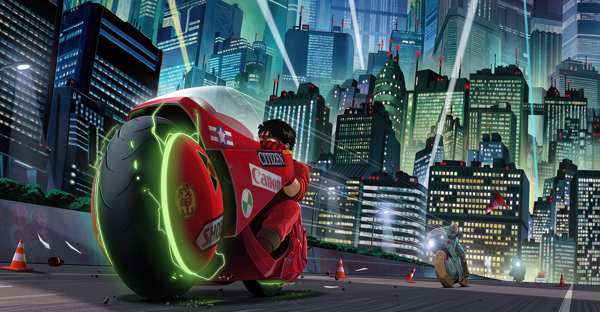

Akira, criado por Katsuhiro Otomo, começou como mangá em 1982, mas foi eternizado em 1988 com o lançamento da animação revolucionária. A história se passa em Neo-Tokyo, um Japão futurista e pós-apocalíptico, marcado por violência urbana, conspirações governamentais e poderes psíquicos. A animação marcou o mundo com seu visual detalhado e adulto, influenciando gerações.
O estilo visual de Akira redefiniu os padrões da animação e dos quadrinhos. Katsuhiro Otomo criou uma Neo-Tokyo hiperrealista, com cenários urbanos complexos, expressões faciais marcantes e ação fluida. Cada quadro parece uma obra de arte, refletindo a decadência e o caos de um mundo à beira do colapso.
Mais que ficção científica, Akira é uma crítica social. O mangá explora temas como o autoritarismo, a desilusão juvenil, experimentos científicos antiéticos e o renascimento espiritual. É uma reflexão poderosa sobre o que acontece quando a humanidade brinca de deus em um mundo sem controle.
O impacto de Akira atravessou décadas. Inspirou filmes, séries, jogos e artistas ao redor do mundo. É considerado um dos marcos do cyberpunk e da animação adulta. Seu legado ainda ecoa na estética futurista, nos questionamentos éticos e no amor pela distopia tecnológica.
Akira – O Mangá que Revolucionou a Ficção Científica
Lançado entre 1982 e 1990, Akira é um dos mangás mais influentes de todos os tempos.
Criado por Katsuhiro Otomo, a obra se passa em Neo-Tóquio, uma metrópole futurista construída após uma explosão devastadora que deu início à Terceira Guerra Mundial.
O enredo acompanha Kaneda e Tetsuo, dois jovens envolvidos com gangues de motoqueiros, conspirações militares e poderes psíquicos que ameaçam destruir o mundo novamente.
Mais do que um marco da ficção científica cyberpunk, Akira é uma crítica profunda à política, ao autoritarismo e à fragilidade da condição humana.
Com arte detalhada, ritmo cinematográfico e uma atmosfera distópica única, o mangá abriu as portas para o reconhecimento global das histórias em quadrinhos japonesas.
{kind=link}